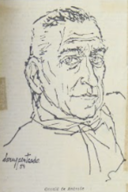

Introdução
A arte multifacetada de Darcy Penteado
Manifestações artísticas, com propostas modernistas, agitaram o Teatro Municipal de São Paulo no
ano de 1922. Com um projeto estético diferenciado, a Semana de Arte Moderna, através das artes
plásticas, literatura, música, teatro, entre outras formas de arte, enternecia boa parte dos
olhares conservadores do período.
É nesse panorama, cuja diversidade de manifestações culturais se tornou marca brasileira dos
anos de 1920, que nasce Darcy Penteado, na cidade de São Roque, interior de São Paulo, no dia 30
de abril de 1926. Momento propício para chegar ao mundo um dos nossos maiores representantes das
artes plásticas, do desenho, da cenografia e dos figurinos.
 Casarão de São Roque, 1952. Desenho em bico de pena nanquim sobre papel.
Acervo Fundação Enrico Dell'Acqua - São Roque (SP).
Casarão de São Roque, 1952. Desenho em bico de pena nanquim sobre papel.
Acervo Fundação Enrico Dell'Acqua - São Roque (SP).
Na pré-adolescência, Darcy muda-se para a capital paulista, aproximando-se mais do universo
artístico que o cotidiano do centro urbano proporcionava. Em entrevista ao jornal
O Pasquim
[1], o artista revela que essa “mudança de ares” ocorreu aos 10 anos de idade para dar continuidade
aos seus estudos, já que à época não havia o curso ginasial na cidade de São Roque.
Em São Paulo, conclui o curso secundário e frequenta uma escola de desenho técnico, sendo contratado
aos 17 anos como desenhista de peças de fogão em uma fábrica.
À esquerda: foto de Darcy e os irmãos, teatro de bonecos, sem data.
À direita: reprodução de matéria de O Estado de S.Paulo, Teatro de Bonecos, 1948.
Acervo Fundação Enrico Dell'Acqua - São Roque (SP).
Suas práticas artísticas ecléticas lhe possibilitaram expressar-se de diversas formas. Durante os
anos de 1940, é constantemente solicitado para ilustrar obras de poetas e contistas brasileiros e
fazer croquis de moda para lojas e confecções. Inicia carreira como cenógrafo e figurinista de
teatro e realiza espetáculos infantis com seu teatro de bonecos no Museu de Arte Moderna em São
Paulo. Além disso, é contratado como arte-finalista em uma agência de publicidade [2].
Durante os anos de 1950, ilustra livros de Jorge Amado, Carlos Drummond de Andrade, Hilda Hilst,
Graciliano Ramos, Reynaldo Bairão, José Escobar Faria, entre outros, bem como as edições do Clube de
Poesia de São Paulo. Nessa década, amplia seu leque de trabalhos como desenhista: caricaturas para
jornais, revistas, livros infantis, croquis de cenografia e figurinos; além de atividades de escrita
como crítico de moda para a revista
Jóia.
À esquerda: ilustração do livro Baladas, de Hilda Hilst, 2003, editora Globo.
À direita: ilustração do livro O país do carnaval, de Jorge Amado, 1979, editora
Record.
Suas exposições individuais se tornam muito frequentes nos anos de 1960. Embora a tentativa de
participar das primeiras Bienais de Arte de São Paulo não tenha sido promissora, durante a IV Bienal
Darcy pôde mostrar sua arte neste evento de alcance internacional.
Entre idas e vindas da Europa e da América do Sul, muitas exposições de suas obras puderam ser
apreciadas dentro e fora do Brasil. Diversas galerias espalhadas pelo mundo receberam o legado
artístico de Darcy Penteado nos anos de 1970. No intervalo entre as exposições, contribuiu com seus
talentos na organização dos desfiles de escolas de samba do Rio de Janeiro: Unidos de Vila Isabel,
Mocidade Independente de Padre Miguel e Imperatriz Leopoldinense.
Nos anos de 1980, Darcy Penteado participa de vários movimentos sociais em defesa de causas
ambientais e dos direitos humanos e em protesto à violência contra homossexuais e prostitutas.
Editor e articulista do jornal
O Lampião da Esquina (que circulou entre 1978 e 1981), do qual
foi um dos fundadores, intencionava também dessa forma ser porta-voz das minorias marginalizadas
pela sociedade tradicionalista.
Reprodução de O charme da bicha brasileira, 1971. Tinta a óleo sobre plástico. Acervo
Fundação Enrico Dell'Acqua - São Roque (SP). Exposição Maloca Centro Cultural, Sorocaba (SP),
2021.
[1] DARCY PENTEADO escancara [entrevista] (
O Pasquim, ano XVII, n. 852, p. 11, 7 nov.-13 nov.
1985).
[2]
Darcy Penteado: Curriculum levemente humanizado (PREFEITURA de São Roque [acervo], data
provável: início dos anos 1980.
1940
Com seus desenhos, Darcy Penteado desponta e passa a ser concorrido
Quando Darcy Penteado iniciou sua carreira profissional, muitos eventos
artísticos chamavam a atenção na cidade
paulistana. Nas artes plásticas, foram inaugurados o Museu de Arte de São Paulo (Masp) em 1947 e
o Museu de Arte Moderna
(MAM) em 1949; já havia também um movimento de organização da primeira exposição da Bienal de
São Paulo, que ocorreria
somente em 1951. Nas artes cênicas, foi fundada a Escola de Arte Dramática (EAD) e criado o
Teatro Brasileiro de Comédia
(TBC), ambos em 1948. Em São Bernardo do Campo, cidade vizinha à capital, se instalava a
Companhia Cinematográfica Vera
Cruz em 1949, conhecida por muitos como a Hollywood paulista[1].

Foto de Darcy com escultura em arame, sem data.
Acervo Fundação Enrico Dell'Acqua - São Roque (SP).
Esses anos foram muito significativos para as artes e para a cultura
paulista de forma geral. Darcy, que havia começado
a trabalhar como desenhista de peças de fogão em 1943, respirava esse clima de crescimento e
empoderamento das artes em
São Paulo. Em entrevista ao jornal O Pasquim[2], o artista conta que a disciplina
exigida nesse
emprego como desenhista
mecânico foi muito importante para sua formação, mas que ele gostava mesmo era de desenhar
figuras; então, inicia a
busca por trabalhos na área de moda, desenhando trajes femininos.
Seus desenhos criativos e originais o levam a abrir novas frentes de
trabalho: em agências de publicidade, revistas de
moda e ilustração de livros infantis. A harmonia de seus traçados se revela no uso da técnica de
bico de pena, que
permite traços com efeitos finos-grossos, tornando seus desenhos únicos, com diferenciais
atrativos e cativantes pela
beleza e elegância dos contornos.

Nu feminino, 1949. Desenho em nanquim sobre
papel.
Acervo Fundação Enrico Dell'Acqua - São Roque (SP).
Aos 18 anos é contratado pela agência de publicidade Panam, depois pela Mc
Cann Erickson e por último pela Standard
Propaganda como arte-finalista. Em 1946, aos 20 anos, faz caricaturas para a revista Bom
Humor.
Tenta ingressar no teatro amador, no grupo de Décio de Almeida Prado, com a
participação de Cacilda Becker,
recém-chegada do rádio. Logo percebe que não leva jeito como ator, porém, se encanta pela
técnica cenográfica e pela
elaboração de figurinos.
Comentários de Paschoal Carlos Magno sobre o teatro de bonecos, no jornal
carioca Correio da Manhã, de 29 de maio de
1948, cita o nome de Darcy Penteado. Esse é um marco do aparecimento de seu nome na imprensa
nacional.
Seu interesse pelo teatro já existia desde a mais tenra infância. Ainda
pequeno, ao lado dos irmãos e da prima, Darcy
havia criado um teatro de marionetes, retomando essa ideia em 1949, junto com os artistas Duja
Gross, Nieta Lex e
Reynaldo Bairão, com uma proposta mais elaborada desse gênero teatral. Chegam a realizar alguns
espetáculos no MAM em
São Paulo, mas o projeto infelizmente não segue em frente.

Foto no jornal Folha da Noite em matéria sobre
apresentação do Grupo Teatro de Bonecos no TBC, dez. 1948. Acervo
Fundação Enrico Dell'Acqua - São Roque (SP).
Foram as ilustrações de poemas da Semana do Novíssimo, em evento realizado no Clube dos Artistas
de São Paulo, que
propiciaram ao artista sua primeira participação em exposições.
Durante o ano de 1948, entre os dias 29 de abril e 2 de maio, vários espaços culturais da cidade
de São Paulo abriram as
portas para receber os “novos” poetas, que, segundo o idealizador do evento – Domingos Carvalho
da Silva –, seria o I
Congresso Paulista de Poesia.
Ilustração para o livro de poemas Praia oculta,
de Domingos de Carvalho da Silva, 1949. Acervo Fundação Enrico
Dell'Acqua - São Roque (SP).
Aos “novos” poetas inspiradores da conferência acabam associando-se, a
partir do congresso, os “novíssimos”, divulgados
desde 1948 pelo Clube de Poesia de São Paulo, entre os quais estão Haroldo de Campos, Décio
Pignatari, Zulmira Tavares e
Mario Chamie, poetas cujo trabalho posterior acabaria por assumir orientação significativamente
independente [...] [3].
Espaços como os auditórios da Biblioteca Municipal de São Paulo, do jornal
A Gazeta e da Escola Normal Caetano de
Campos, bem como o MAM e o foyer do Teatro Municipal abriram suas portas aos poetas
durante o congresso.
Os retratos desenhados por Darcy Penteado também começam a circular pela
cidade de São Paulo, vindo a público mais um de
seus talentos: agora como retratista. Em 1948, pode-se apreciar o retrato de Di Cavalcanti, no
Diário de São Paulo. Em
1949, a revista Artes Plásticas publica o retrato de Jovina Duarte, mãe do sociólogo
Paulo Duarte.

Retrato de Emiliano Di Cavalcanti, 1948. Desenho
em nanquim.
Reserva técnica do Masp (SP).
Ainda em 1949, o artista se torna ilustrador do suplemento literário do
Jornal de Notícias, de São Paulo, sendo muito
procurado por contistas e poetas brasileiros para ilustrar seus livros, sejam capas ou
ilustrações internas.
Para fechar com chave de ouro a década de 1940, Darcy Penteado faz sua
primeira exposição individual na comemoração de
um ano da Semana do Novíssimo, no Instituto dos Arquitetos de São Paulo. O público pôde conhecer
então não somente seus
desenhos, mas também suas esculturas feitas com arame.
.

Catálogo do evento comemorativo da Semana do Novíssimo,
1949. Acervo Fundação Enrico Dell'Acqua - São Roque (SP).
[1] MATTOS, David José Lessa (O espetáculo da cultura paulista:
teatro e
televisão em São Paulo [décadas de 1940 e 1950],
2002, p. 21).
[2] DDARCY PENTEADO escancara [entrevista] (O Pasquim, ano XVII, n. 852, p.
11, 7 nov.-13 nov. 1985).
[3] DA COSTA, Edson José (A Geração de 45. Letras, nº 49, p. 54, 1998).
1950
A efervescência artística e o vanguardismo de Darcy Penteado
Rosto desenhado com duas mãos ao mesmo tempo, 1952. Nanquim
sobre papel.
Acervo Fundação Enrico Dell’Acqua - São Roque (SP).
Nos anos de 1950, o Modernismo esteve presente em diversas formas de representação estética
na cidade de São Paulo, bem
como em outras regiões do território nacional. Nas paisagens urbanas, os novos projetos
arquitetônicos são pensados a
partir da utilização de elementos geométricos. Lúcio Costa e Oscar Niemeyer, responsáveis
pelo plano piloto e projeto
arquitetônico daquela que viria a ser a capital do país, tornam-se referência da arte
urbanística futurista com a
construção de Brasília, ocorrida entre 1957 e 1960.
Caminhando paralelamente a essas novidades arquitetônicas naqueles anos de 1950, o surgimento da
televisão – marco
importante da comunicação e da cultura nacional –, o novo ritmo musical do
rock and roll e o
concretismo estético, entre
outras manifestações artísticas, possibilitaram a ascensão de expressões culturais nas mais
diferentes áreas.
Na música, o movimento da Bossa Nova, que alcançou destaque mundial com sua forma diferenciada de
tocar e cantar o ritmo
do samba, é um exemplo dessas inovações.
Nas artes plásticas, o movimento concretista reuniu experimentações e pesquisas iniciadas nos anos
1940 e inaugurou uma
nova fase de produção artística. Inovações, explorações e descobertas abriram as portas para a arte
contemporânea. Essa
vanguarda pôde ser vista na I Bienal de São Paulo, realizada entre outubro e dezembro de 1951.
Ficha de Inscrição Bienal, 1951. Biblioteca e arquivo histórico
Wanda Svevo,
Fundação Bienal de São Paulo.
Inovações,
explorações e
descobertas abriram
as portas para a nova arte contemporânea.
A vanguarda do concretismo, iniciada pela música e incorporada pelas artes plásticas, puderam
ser
vistas na I Bienal de
São Paulo, realizada entre outubro e dezembro de 1951.
O cenário artístico já vinha sendo impulsionado desde o final da década de 1940 com a inauguração do
Museu de Arte de
São Paulo (Masp) e dos Museus de Arte Moderna do Rio de Janeiro e de São Paulo. Esses espaços
abrigavam a arte moderna,
acolhendo artistas e exposições imprescindíveis para o envolvimento do público nacional e
internacional com a arte
brasileira.
Um dos principais eventos internacionais das artes plásticas no Brasil até hoje, a Bienal de São
Paulo teve sua primeira
edição, em 1951, amplamente noticiada. No concurso realizado para a escolha do cartaz de divulgação,
Darcy Penteado
obteve a segunda colocação, resultado bastante significativo para sua carreira e visibilidade como
artista plástico.

Cartaz premiado em 2º lugar na 1ª Bienal de São Paulo, 1951.
Biblioteca e arquivo histórico Wanda Svevo, Fundação Bienal de São Paulo.
No final do ano de 1952, Darcy participa do 2º Salão Paulista de Arte Moderna, no setor de desenho.
Esse evento,
realizado pela primeira vez em 1948, teve papel importante na promoção da arte brasileira,
oferecendo um espaço singular
para exposição de artistas emergentes. Os “Salões de Arte Moderna” que pipocavam em várias cidades
brasileiras permitiam
a apresentação de obras em diferentes formatos: fotografia, desenho, pintura, instalações
multimídia, entre outras.
No Museu de Arte Moderna de São Paulo (MAM-SP), em março de 1954, o artista inaugura uma exposição
de desenhos com a
presença de pessoas ilustres da sociedade. Utilizando-se da técnica “mata-borrão”, esses desenhos
envolviam papéis,
tecidos ou esponjas para atenuar ou fundir as texturas ou linhas.

Gato, 1956. Desenho em mata-borrão.
Acervo Fundação Enrico Dell’Acqua - São Roque (SP).
Neste mesmo ano, o artista participa do 3º Salão Nacional de Arte Moderna no Rio de Janeiro; no ano
seguinte, 1955,
compõe a mostra da III Bienal de São Paulo; e, em 1956, faz nova exposição individual no MAM-SP.

Meninas, 1953. Desenho em nanquim sobre papel.
Acervo Fundação Enrico Dell’Acqua - São Roque (SP).
Artes Cênicas
Esse viés artístico de Darcy Penteado aparece já em sua meninice, com o teatro de bonecos
que ele criara junto com os
irmãos e uma prima e promovia singelas apresentações em sua cidade natal. Ao longo da
carreira, esse talento se expandiu
para figurinos e cenários de diversas produções teatrais, com os quais obteve seus primeiros
reconhecimentos públicos.
Em 1952, uma nova fase de seu contato com as artes cênicas se inicia: estreia no Teatro Brasileiro
de Comédia (TBC) com
a confecção de máscaras para a versão grega da peça Antígone, de Sófocles, sob direção de Adolfo
Celi, figura de
destaque na profissionalização do teatro nacional à época. No mesmo ano, Darcy faz a cenografia e o
figurino da peça A
calça, de Carl Sternheim, direção de Evaristo Ribeiro, e, em 1954, da peça Iolanda, de Curt Goetz,
dirigida pelo então
iniciante Antunes Filho, ambas para o grupo teatral de Lotte Sievers [1].
Foto de Darcy no cenário da peça de teatro A calça, 1952.
Acervo Fundação Enrico Dell’Acqua - São Roque (SP).
Fundado na cidade de São Paulo pelo empresário Franco Zampari, em 1948, o TBC, sob influência das
vanguardas teatrais
europeias do período, trouxe diversas inovações para o universo teatral do país, modernizando-o em
vários aspectos.
O ecletismo, marca da companhia, propiciava a criação e produção de peças com novas propostas
estéticas e com
dramaturgias impetuosas, rompendo com tendências mais convencionais.
Construíram a imagem do TBC muitos artistas que se tornaram famosos: Cacilda Becker, Paulo Autran,
Tônia Carrero, Walmor
Chagas, Fernanda Montenegro, Fernando Torres, Cleyde Yáconis, entre outros.
As montagens [de teatro de bonecos] de Nieta Lex Leite eram basicamente para o público infantil,
mas, no ano de 1953,
arriscou fazer um espetáculo para adultos, juntamente com Maria Duja Gross, Nelly Ribeiro Leite,
Darcy Penteado e
Reynaldo Bairão. No TBC, apresentaram Pássaro de Fogo, de Stravinsky, O Irmão das Almas e O
Maquinista, de Martins Pena,
e Farsa Grotesca, de Aldous Huxley. Os bonecos foram de autoria de Darcy Penteado [2].
Darcy Penteado esteve envolvido com o TBC em diversos momentos. Em 1958, ele elabora os figurinos da
peça Pedreira das
almas, texto de Jorge Andrade, dirigida por Alberto D’Aversa, demonstrando mais uma vez sua
criatividade e habilidade
como designer teatral. Esse trabalho lhe rendeu o Prêmio Saci, em 1959, de melhor figurinista,
oferecido pelo jornal O
Estado de S. Paulo. Tal premiação ocorria anualmente aos maiores destaques da produção nacional de
teatro e cinema.
Catálogo da peça de teatro Pedreira das almas, 1958. Acervo
Fundação Enrico
Dell’Acqua - São Roque (SP).
À esquerda: fotos na revista O Cruzeiro, peça de teatro É
proibido suicidar-se na primavera, com Nicete Bruno e Paulo
Goulard, cenário de Darcy, 1954. À direita: Catálogo da peça, 1954. Acervo Fundação Enrico
Dell'Acqua - São Roque (SP).
Durante os anos de 1950, Darcy teve a oportunidade de trabalhar com renomados diretores teatrais. Em
1953, desenvolve
cenário e figurinos para a peça
É proibido suicidar-se na primavera, de Alejandro Casona,
direção de
Ruy Affonso,
encenado pela Companhia Nicette Bruno. Por este trabalho, o artista recebeu o Prêmio Governador do
Estado de melhor
cenografia.
No ano de 1954, Darcy Penteado desenha a cenografia e os trajes do balé
Sonata da angústia,
para o evento comemorativo
do IV Centenário de São Paulo [3]. A coreografia ficou a cargo de Ismael Guiser, nome consolidado na
história da dança
brasileira, com música do compositor húngaro Béla Bartók. Para produzir a cenografia, Darcy teve que
explorar
sentimentos e emoções compatíveis à atmosfera dramática da dança.
Neste mesmo ano, inicia cenários e figurinos para a nascente televisão.
Esses são apenas alguns exemplos da contribuição do artista nas artes cênicas.
Literatura: ilustrações e retratos
Concomitantemente ao trabalho desenvolvido no teatro, Darcy Penteado mantém-se bastante ativo em
outras atividades
artísticas.
Desde o final da década de 1940, dedicava-se ao desenho de retratos e às ilustrações para livros,
jornais e revistas.
Nos anos de 1950, ilustra livros de Hilda Hilst, Domingos Carvalho da Silva, Reynaldo Bairão, entre
outros, bem como as
edições do Clube de Poesia de São Paulo.
Para compor seus textos visuais, utiliza-se da intertextualidade, diálogo entre diferentes
linguagens, englobando
elementos de diversas produções imagéticas.
Em 1950, Darcy Penteado participa da exposição coletiva organizada por Oswald de Andrade no
foyer do Teatro Municipal de
São Paulo. Esse tipo de exposição se tornou rotineira em várias localidades do país, pois era uma
forma de dar
visibilidade à nossa vanguarda literária.
Em 1952, Darcy realiza frequentes trabalhos de capista e ilustrador para a Livraria Martins Editora
e, no ano seguinte,
além de ilustrar livros infantis para a Edições Melhoramentos, de São Paulo, o faz também para o
livro premiado do
Concurso de Poesia Feminina do jornal
A Gazeta (SP). Em 1957, publica o álbum
Nosso teatro
de bonecos pela
Melhoramentos.
Capa do Livro Nosso Teatrinho de Bonecos, de Reynaldo Bairão
e Darcy Penteado, 1957, Edições Melhoramentos. Acervo
Fundação Enrico Dell’Acqua - São Roque (SP).
O livro da poeta Lupe Cotrim,
Raiz comum, de 1959, recebe um belo retrato da autora desenhado
por Darcy, sendo dele
também as ilustrações de
Monólogos do afeto, livro de estreia de Lupe em 1956 [4].
A técnica utilizada por Darcy na composição dos retratos em branco e preto tornou-se uma de suas
marcas registradas
nesse gênero das artes visuais.

Retrato de Oswald de Andrade, 1957. Jornal Folha da Noite, 8
fev. 1957.
Acervo Fundação Enrico Dell’Acqua - São Roque (SP).
Os jornais e revistas brasileiros impressos tiveram papel muito importante na cultura letrada
nacional, sendo
fundamentais para a difusão de informações, ideias e debates. Os periódicos eram veículos vitais
para o jornalismo,
ciência, política, literatura, esportes, artes, entre outras áreas do conhecimento, principalmente
em um período em que
pouquíssimos lares brasileiros tinham acesso a um aparelho de televisão.
Darcy Penteado, ao assinar suas produções para os periódicos nacionais, garantia maior visibilidade
pessoal e
profissional na sociedade da época. Em 1951, ele inicia um trabalho no suplemento de arte do
Jornal de Notícias, cuja
seção “Sucesso teatral da semana” trazia seus desenhos e respectivos comentários sobre as artes
cênicas.
No início de 1952, o artista começa a colaborar como ilustrador na
Revista Branca, de
literatura e arte, do Rio de
Janeiro, e a ilustrar a revista
Rio. No ano seguinte, ainda para a revista Rio, faz uma série
de entrevistas desenhadas,
cujo título era “O artista em seu habitat”.
Capa da revista Rio, 1952. Acervo Fundação Enrico
Dell'Acqua - São Roque (SP).
A partir de 1956, Darcy torna-se ilustrador do Suplemento Literário do jornal O Estado de S. Paulo.
O
suplemento fora
idealizado para ser um espaço dedicado a resenha de livros, entrevistas com autores, artigos sobre
literatura, crítica e
demais temas do mundo literário, sendo uma importante plataforma de divulgação e debate sobre a
literatura nacional e
internacional.
No ano de 1958, ele começa a fazer comentários e críticas sobre a história da moda na revista Jóia,
cujo
público-alvo
eram os segmentos de moda e joias, trazendo informações e novidades do mercado, tendências e estilos
de
moda e beleza.
A sétima arte
No ano de 1952, Darcy Penteado assumiu um belo trabalho para a Cia. Cinematográfica Vera Cruz, cuja
responsabilidade era
a de desenhar em quadrinhos o filme Tico-tico no fubá, dirigido por Adolfo Celi. Sendo uma comédia
musical que
homenageava o choro “Tico-tico no Fubá”, de Zequinha de Abreu, esse longa-metragem tornou-se uma
referência do cinema
brasileiro.

Filme Tico-tico no fubá em quadrinhos, jornal Última
hora, 14
abr. 1952.
Acervo Fundação Enrico Dell’Acqua - São Roque (SP).
Para não finalizar: o ecletismo
O envolvimento de Darcy Penteado com diversas artes durante a década de 1950 lhe propiciou
desenvolver
trabalhos
ao lado
de artistas e intelectuais consagrados da arte moderna e da vanguarda intelectual brasileira: Oswald
de
Andrade,
Hilda
Hilst, Lasar Segall, Mario Zanini, entre tantos outros nomes relevantes da cultura nacional. Isso
oportunizou
alavancar
seu trabalho como artista plástico, figurinista, ilustrador, produtor audiovisual, desenhista e
cenógrafo.
Influenciado pelas vanguardas europeias (expressionismo e cubismo), soube incorporar a realidade
brasileira à
sua
produção. Seu ecletismo artístico permitiu a exploração de temas relacionados ao cotidiano, à rotina
urbana, às
questões
sociais, retratando com sensibilidade as nuances da vida brasileira.
[1] Não conseguimos confirmar, em pesquisa, se estas peças foram encenadas no TBC.
[2] MENDONÇA, Tânia Gomes (Entre os fios da história..., 2020, p. 399).
[3] Embora o balé tenha sido organizado para estrear em São Paulo, isso ocorreu no Rio de Janeiro
porque
o
Teatro Municipal
de São Paulo estava em reforma.
[4] GOUVÊA, Leila V. B. (Lupe Cotrim: algumas lições do amigo..., 2009, p. 60 e 63).